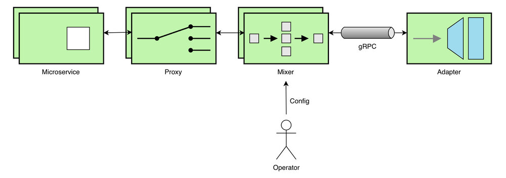

本文为翻译文章，点击查看原文。
你已经浏览了Istio Mixer Adapter的指南 ，现在想要发布自己的Adapter？这篇文章将教你创建自己的Adapter，在生产环境的海洋中扬帆起航。
介绍
根据你对Go、Protobufs、gRPC、Istio、Docker和Kubernetes知识有所了解，你可能会发现发布Istio Mixer Adapter的过程很容易。本文假设你对这些技术有一些经验，并且根据Istio的Wiki已经能够完成至少一个演练。
就本文的目的而言，我将讨论如何构建一个消费Metrics的Istio Mixer Adapter。下面是简要步骤：
- Istio Mixer - Adapter接口架构
- 创建一个简单的Mixer Adapter
- 将Adapter发布到Docker Hub
- 为Adapter编写Kubernetes Config
- 在Istio上部署和测试Adapter
再次强调，我将尽最大努力在这篇文章里呈现所有重要的细节，让你的Adapter运行起来。
Istio Mixer - Adapter接口架构
让我们首先看看Adapter如何与Istio Mixer结合。Kubernetes在一定程度上抽象了接口；了解这一点对我们来说很重要。

下面是对上述架构中的每个元素的简要描述。
- Microservice是在Istio上部署的用户应用程序
- Proxy是Istio组件，例如Envoy Proxy，控制Service Mesh中的网络通信
- Mixer是Istio组件，它从Proxy接收指标(和其他)数据，并转发给其他组件(在本例中是Adapter)
- Adapter是我们正在构建的应用程序，通过gRPC消费来自Mixer的Metrics
- Operator扮演负责配置和部署的角色，在本例中是Istio和Adapter
需要注意的一点，每个组件都作为独立的进程运行，并且可能分布在网络上。此外，Mixer还与Adapter建立了一个gRPC通道，以便为其提供用户的配置和Metrics。
创建一个简单的Mixer Adapter
简单起见，我将按照 Mixer Out of Tree Adapter Walkthrough 这篇文章建立一个简单的Mixer Adapter。下面是概要，列出了创建消费Metrics的Istio Mixer Adapter的步骤：
- 创建Adapter的配置文件
config.proto - 创建
mygrpcadapter.go文件，实现HandleMetric(context.Context, *metric.HandleMetricRequest) (*v1beta11.ReportResult, error)这个gRPC API的调用 - 通过
go generate ./...生成配置文件 - 创建
main.go文件作为gRPC的服务端，并监听API调用 - 为Adapter编写配置文件
sample_operator_config.yaml - 启动本地Mixer进程来测试和验证Adapter
- 配置项目
- 添加必要的依赖包(使用Go Modules、 Glide、Dep等)
- 通过启动本地Mixer进程来构建和测试Adapter
发布Adapter到Docker Hub
在本地安装和测试了myootadapter项目后，就可以构建并发布Adapter到Docker Hub库了。在继续前请执行以下步骤：
- 移动
mygrpcadapter/testdata/目录下的内容到operatorconfig - 创建
Dockerfile文件来保存创建Docker镜像的步骤 - 最后，在
operatorconfig/目录下创建一个名为mygrpcadapter-k8s的文件，稍后将使用它部署到Kubernetes
完成了这些步骤后，你的项目结构会如下所示。
── myootadapter
├── Dockerfile
├── glide.lock # 是否出现此类文件取决于你使用的依赖包管理工具
├── glide.yaml
├── mygrpcadapter
│ ├── cmd
│ │ └── main.go
│ ├── config
│ │ ├── config.pb.go
│ │ ├── config.proto
│ │ ├── config.proto_descriptor
│ │ ├── mygrpcadapter.config.pb.html
│ │ └── mygrpcadapter.yaml
│ └── mygrpcadapter.go
└── operatorconfig
├── attributes.yaml
├── metrictemplate.yaml
├── sample_operator_config.yaml
├── mygrpcadapter-k8s.yaml
└── mygrpcadapter.yaml
现在来构建Docker镜像并发布到Docker Hub。
构建Docker镜像
多阶段构建（multi-stage builds）模式可以被用来构建Docker镜像。将以下内容复制到Dockerfile中：
FROM golang:1.11 as builder
WORKDIR /go/src/github.com/username/myootadapter/
COPY ./ .
RUN CGO_ENABLED=0 GOOS=linux \
go build -a -installsuffix cgo -v -o bin/mygrpcadapter ./mygrpcadapter/cmd/
FROM alpine:3.8
RUN apk --no-cache add ca-certificates
WORKDIR /bin/
COPY --from=builder /go/src/github.com/username/myootadapter/bin/mygrpcadapter .
ENTRYPOINT [ "/bin/mygrpcadapter" ]
CMD [ "8000" ]
EXPOSE 8000
CMD [ "8000" ] 告诉Docker，将8000作为参数，传递给定义在行ENTRYPOINT [ "/bin/mygrpcadapter" ]的入口。 因为我们在这里把gRPC的监听端口改为了 8000，所以必须更新文件sample_operator_config.yaml 使其一致。把原来的配置 address: "{ADDRESS}" 用 address: mygrpcadapter:8000替换。
还需要更新file_path，在稍后创建的Volume中去存储输出数据。更新file_path: "out.txt"为file_path: "/volume/out.txt" 。然后将得到如下所示的配置：
apiVersion: "config.istio.io/v1alpha2"
kind: handler
metadata:
name: h1
namespace: istio-system
spec:
adapter: mygrpcadapter
connection:
address: "mygrpcadapter:8000"
params:
file_path: "/volume/out.txt"
现在，在 myootadapter 目录下运行命令来构建和标记Docker镜像：
docker build -t dockerhub-username/mygrpcadapter:latest .
发布镜像到Docker Hub
首先，通过终端登录到Docker Hub：
docker login
接下来，使用下面的命令发布镜像：
docker push dockerhub-username/mygrpcadapter:latest
为Adapter编写Kubernetes配置
现在让我们填写部署到Kubernetes的Adapter配置。将以下配置复制到我们之前创建的yaml文件mygrpcadapter-k8s中：
apiVersion: v1
kind: Service
metadata:
name: mygrpcadapter
namespace: istio-system
labels:
app: mygrpcadapter
spec:
type: ClusterIP
ports:
- name: grpc
protocol: TCP
port: 8000
targetPort: 8000
selector:
app: mygrpcadapter
---
apiVersion: extensions/v1beta1
kind: Deployment
metadata:
name: mygrpcadapter
namespace: istio-system
labels:
app: mygrpcadapter
spec:
replicas: 1
template:
metadata:
labels:
app: mygrpcadapter
annotations:
sidecar.istio.io/inject: "false"
scheduler.alpha.kubernetes.io/critical-pod: ""
spec:
containers:
- name: mygrpcadapter
image: dockerhub-username/mygrpcadapter:latest
imagePullPolicy: Always
ports:
- containerPort: 8000
volumeMounts:
- name: transient-storage
mountPath: /volume
volumes:
- name: transient-storage
emptyDir: {}
上面的配置定义了一个简单的服务，只有一个从dockerhub-username/mygrpcadapter:latest的镜像创建的副本。该服务可以被命名为mygrpcadapter，并通过端口8000访问。这就是如何让配置在sample_operator_config.yaml 文件的 address: "mygrpcadapter:8000" 指向这个特殊的deployment的方法。
同时，注意这些特殊的标记：
annotations:
sidecar.istio.io/inject: "false"
scheduler.alpha.kubernetes.io/critical-pod: ""
它告诉Kubernetes调度器，不要自动注入Istio的sidecar。这是因为我们并不需要在Adapter前面挂一个Proxy。另外，第二个标注将这个pod标记为系统critical级别。
我们还创建了一个名为transient-storage的临时volume，用于存储Adapter的输出，例如out.txt文件。配置如下所示：
volumeMounts:
- name: transient-storage
mountPath: /volume
volumes:
- name: transient-storage
emptyDir: {}
通过Istio部署和测试Adapter
为了简洁起见，我将依赖于项目文档 部署 Istio， Bookinfo 应用 和 确定 ingress IP 和端口进行演示。
部署Adapter
现在可以通过Kubernetes部署Adapter：
kubectl apply -f operatorconfig/
mygrpcadapter服务会部署在istio-system的命名空间下。你可以执行下面的命令验证：
kubectl get pods -n istio-system
打印的日志如下：
NAME READY STATUS RESTARTS AGE
istio-citadel-75c88f897f-zfw8b 1/1 Running 0 1m
istio-egressgateway-7d8479c7-khjvk 1/1 Running 0 1m
.
.
mygrpcadapter-86cb6dd77c-hwvqd 1/1 Running 0 1m
也可以执行下面的命令查看Adapter的日志：
kubectl logs mygrpcadapter-86cb6dd77c-hwvqd -n istio-system
它应该打印下面的日志：
listening on "[::]:8000"
测试Adapter
在终端执行下面的命令，或者在浏览器输入URL http://${GATEWAY_URL}/productpage 发送请求到部署的Bookinfo应用：
curl -o /dev/null -s -w "%{http_code}\n" http://${GATEWAY_URL}/productpage
通过访问Adapter容器验证在/volume/out.txt文件中的输出：
kubectl exec mygrpcadapter-86cb6dd77c-hwvqd cat /volume/out.txt
你会看到如下的输出：
HandleMetric invoked with:
Adapter config: &Params{FilePath:/volume/out.txt,}
Instances: 'i1metric.instance.istio-system':
{
Value = 1235
Dimensions = map[response_code:200]
}
结论
Istio提供了一种标准机制来管理和观测云环境下的微服务。Mixer让开发人员能够轻松地将Istio扩展到自定义平台。我希望这篇指南让你对Istio Mixer - Adapter结合有一个初步了解，以及如何自己构建一个生产就绪的Adapter！
去发布你自己的Istio Mixer Adapter! 可以用Wavefront by VMware Adapter for Istio 这篇文章做参考。
如果你希望在Istio 适配器页面上发布你的Adapter，请参考这个Wiki。
免责声明：本文仅属于作者本人，并不代表VMware的立场、策略或观点。
Venil Noronha 开源软件爱好者